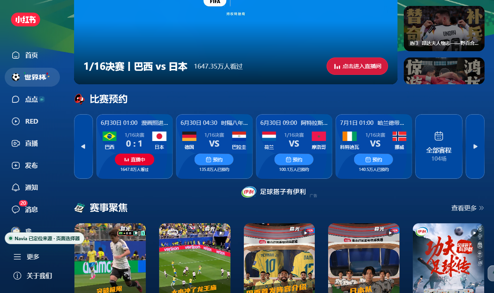
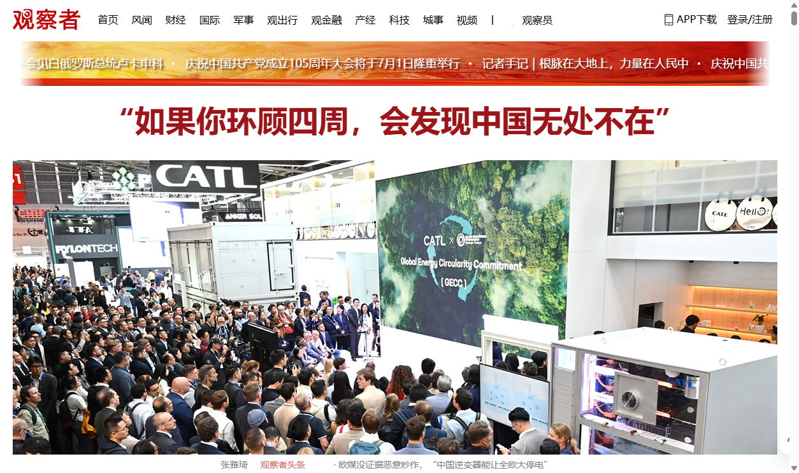

B站 / homepage
https://www.bilibili.com/
文本 609
SourceRef 82
Digest 18
EvidenceCard 10
Jumpback highlighted
导图标签 10 · 噪声 0.00 · 唯一 1.00
无 fatal / major issue
验收通过
Navia 当前可实现的真实网页伴读、Evidence Card Mindmap、Reading Map 和 source jumpback 用户路径通过自动化可视化验收。
生成时间：2026-06-29T18:04:02.180Z
Login profile was unavailable; diagnostic used a temporary Chrome profile with injected auth cookies. Auth cookies were injected for: bilibili(30), xiaohongshu(16). Cookie values are intentionally omitted from evidence.
Content Script 注入网页内入口/侧栏 -> Side Panel / iframe shell -> Python Local Runtime -> A Page Reading -> C Mindmap -> D Adapter/Event/Trace -> B Evidence Card Mindmap / Reading Map -> 用户触发 source evidence / DOM highlight / fallback。
当前实现为 WXT/React Chrome extension + Python local runtime。页面内侧栏/launcher 与 Chrome Side Panel 作为前端承载，Mock CoreProvider 支撑本地可重复验收；A/C/D/B 模块已支持当前页读取、结构化摘要/问答、Evidence Card Mindmap、Reading Map、source cards 和 jumpback。
不声明完整 V1 complete，不声明 V2 Memory/RAG、Web Research、PPT、Deep Research、多 Agent、语音、桌宠或浏览器自动操作产品能力 ready。
| 检查项 | 命令 | 结果 | 耗时 | 证据 |
|---|---|---|---|---|
| 前端类型检查 | npm --prefix apps/chrome-extension run typecheck |
通过 | 14s | 日志 |
| 前端单元测试 | npm --prefix apps/chrome-extension test -- pageContext contentBridge |
通过 | 16s | 日志 |
| A/C 模块测试 | PYTHONPATH=.tmp/python-deps:services/local-runtime .venv/bin/python -m pytest services/local-runtime/navia_runtime/modules/page_reading/tests services/local-runtime/navia_runtime/modules/mindmap/tests -q |
通过 | 8s | 日志 |
| E2E 扩展构建 | npm --prefix apps/chrome-extension run build:e2e |
通过 | 19s | 日志 |
| 真实站点 Chrome 自动化诊断 | NAVIA_REAL_SITE_HEADLESS=1 npm --prefix apps/chrome-extension run e2e:chrome:real-site-diagnostics |
通过 | 127s | 日志 |
Real-site complex page diagnostic passed for Bilibili, Xiaohongshu, and Guancha homepage/detail samples.
docs/active/project/evidence/v1_real_site_complex_pages/report.json
V1.3 Evidence Card Mindmap experience complete
docs/active/project/evidence/v1_3_evidence_card_mindmap/report.json
V1.4 Reading Map Side Panel navigation experience complete
docs/active/project/evidence/v1_4_reading_map/report.json
以下截图来自自动化打开真实网页、加载 Navia 插件、读取当前页、生成 Mindmap / Reading Map、点击 source evidence 并完成 DOM highlight 的流程。
https://www.bilibili.com/
无 fatal / major issue
https://www.bilibili.com/video/BV18W7t6GEmc/

无 fatal / major issue
https://www.xiaohongshu.com/worldcup26?pageFrom=nightRedirect&wcup_source=nightRedirect

无 fatal / major issue
https://www.xiaohongshu.com/explore/6a2aa1e9000000002202f747?xsec_token=[redacted]&xsec_source=pc_sfeed

无 fatal / major issue
https://www.guancha.cn/


无 fatal / major issue
https://www.guancha.cn/internation/2026_06_29_822013.shtml


无 fatal / major issue
未发现 fatal / major false-green 风险。